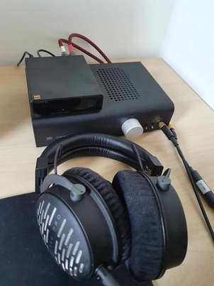
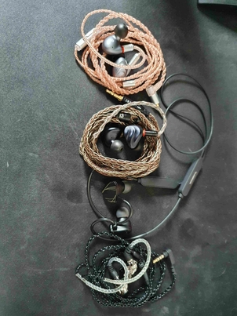
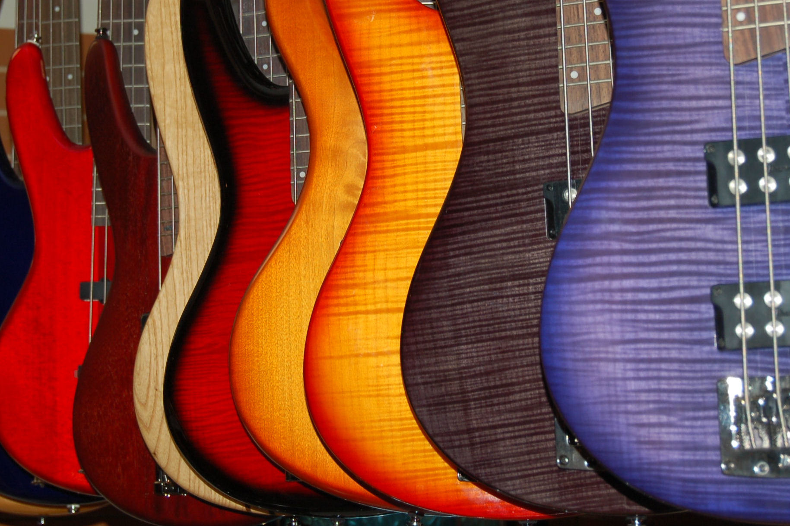

Headphones
Mijn headphens dac en amp

IEM's
Mijn collectie IEM's

Lezen
Ik lees graag boeken.
Muziek
Ik luister zowat elke dag naar muziek

Gitaar
Tijdens de lockdown ben ik begonen met gitaar te spelen
Muziek
Ik luister zowat elke dag naar muziek